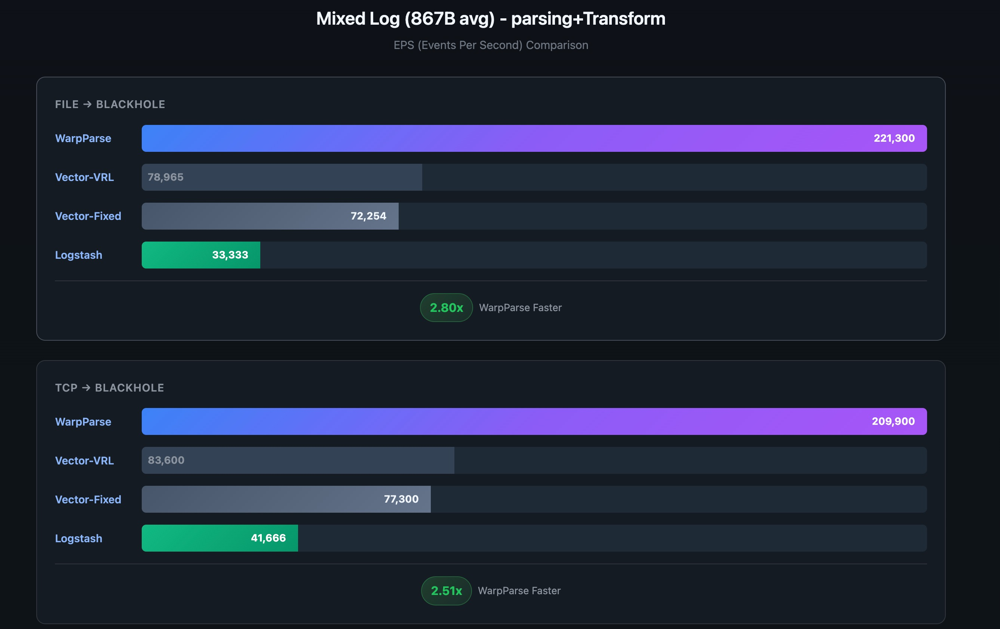
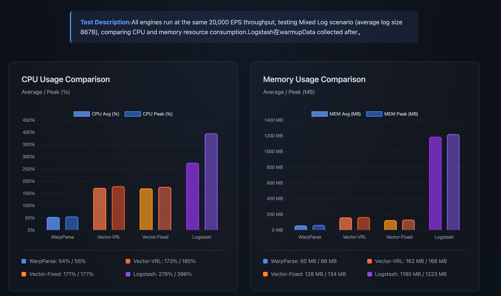

在中国长沙的办公室的正式开源发布
2026年1月23日，我们在中国长沙的办公室正式开源发布了WarpParse - 新一代高性能ETL引擎。 WarpParse是一款面向可观测性、安全、实时风控和数据平台团队的高性能开源ETL引擎。 经过充分的基准测试验证，WarpParse在吞吐量、资源消耗和易用性等多个维度都达到业界领先水平。
新型ETL引擎有什么优势？
超越Vector的吞吐量
WarpParse在性能上实现了重大突破：
- 解析性能：在混合日志场景下相比Vector-VRL提升 3.4x-3.5x
- 解析+转换性能：提升 2.8x-2.80x
- 极限吞吐：Nginx日志场景达到 810,100 EPS（File→BlackHole）
- 数据吞吐：APT大包场景达到 380+ MiB/s
这些性能数据基于AWS EC2标准配置（8 vCPU / 16 GiB RAM）在完全公平的测试环境中获得， 具有高度的可复现性和参考价值。

负载下资源最低
在相同的20,000 EPS固定吞吐量下，WarpParse展现出极优的资源利用效率：
- CPU占用：仅需54%平均CPU，相比Vector-VRL降低68.8%，相比Logstash降低80.4%
- 内存占用：仅需60 MB平均内存，相比Vector-VRL降低63.0%，相比Logstash降低95.0%
这意味着在资源受限的边缘环境中，WarpParse能够用更少的资源完成相同的工作量， 非常适合大规模部署和成本优化场景。

使用成本更低的DSL
WarpParse提供了两种革命性的领域特定语言（DSL）：
WPL（WarpParse Language）- 解析DSL
- 规则体积更小：相比正则表达式平均减少30-50%的配置复杂度
- 内置逻辑感知算子：支持alt（择一容错）、opt（可选匹配）、some_of（循环探测）等高级特性
- 集成化流水线：在单一表达式中完成清洗和解析，避免多个组件间的数据传递开销
OML（Object Modeling Language）- 转换DSL
- 声明式建模：用户只需描述"要什么"而不用关心"怎么做"
- 原生SQL集成：支持在构建对象时直接查询数据库进行实时数据增强
- 灵活的聚合构造：支持复杂的嵌套JSON对象构建和数组聚合
对于我们的客户、行业有什么价值？
可观测性和安全分析
- 高性能日志处理：支持海量日志实时摄取和分析，满足安全威胁检测的低延迟需求
- 灵活的数据转换：通过WPL和OML快速适配各类日志格式，包括Nginx、Sysmon、APT威胁日志等
- 实时数据富化：利用OML的SQL集成能力，将原始日志与用户信息、地理位置等上下文关联
成本优化
- 资源节省：相同的日志处理能力，WarpParse所需的硬件投入显著更低
- 运维简化：单二进制部署，配置化管理，无需复杂的多组件编排
- 规模效应：在大规模部署中，CPU和内存的节省可带来可观的TCO降低
生态兼容
- 统一连接器API：支持Kafka、MySQL、Elasticsearch、VictoriaLog、Doris等主流数据源和目标
- 开源协议：采用Apache 2.0开源协议，提供商业级支持和保证
- 社区驱动：欢迎开发者贡献新的连接器和优化方案
开源采用Apache 2.0协议
WarpParse 采用了Apache License 2.0开源协议：
- 自由使用：所有用户可以自由下载、使用和修改源代码
- 商业友好：开放的许可证，允许商业应用和衍生产品
- 社区贡献：欢迎社区提交PR和贡献，完善生态
- 长期支持：大禹安全承诺为WarpParse提供持续的技术支持和功能迭代
WarpParse的未来如何发展？
2026规划
- 生态扩展：新增更多连接器支持，覆盖主流数据平台
- 工具链完善：发布wpgen代码生成工具、wprescue故障诊断工具、wproj项目管理工具等运维工具套件
- WPL/OML完善：根据社区反馈扩展语义类型和协议、扩展管道函数库
- WP-Editor完善：增强在线编辑器功能，改进错误定位和使用体验
- WP-Rule运营：建立社区规则库，共享常见日规则
- 全球生态：建立国际开发者社区，推动WarpParse的使用
我们的承诺
WarpParse不仅是一个高性能的技术产品，更是我们对开源社区的深入承诺。我们相信：
- 性能是基础：高效的资源利用是所有应用的前提
- 易用性是关键：好的DSL设计能显著提升开发效率
- 开放是方向：开源和社区驱动能加速创新迭代
我们欢迎所有对高性能ETL引擎感兴趣的开发者、架构师和运维人员加入WarpParse社区， 共同推动数据处理技术的进步。